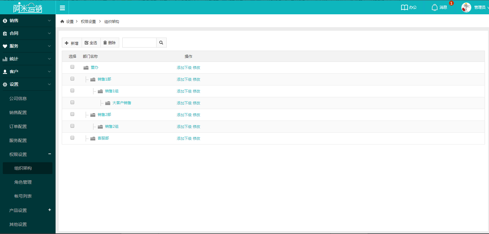
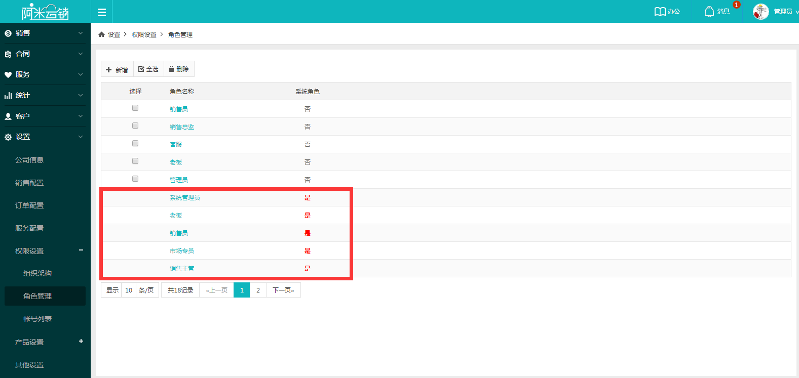
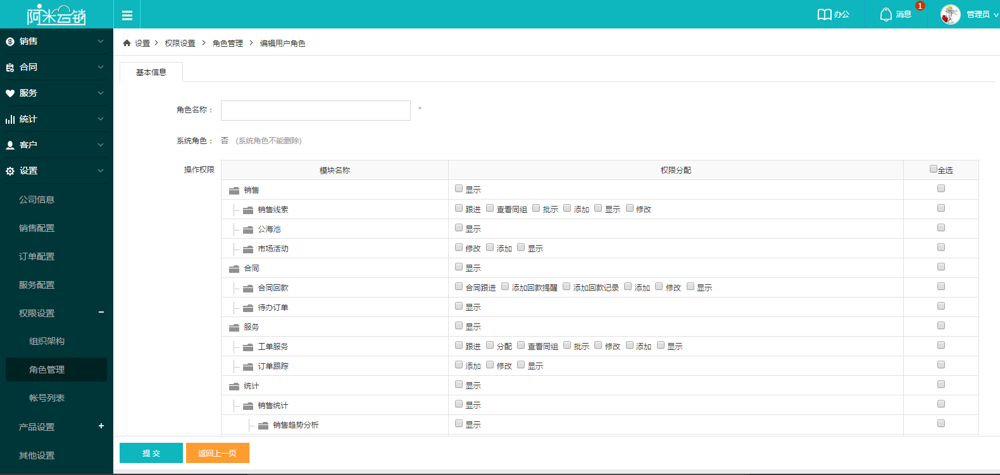
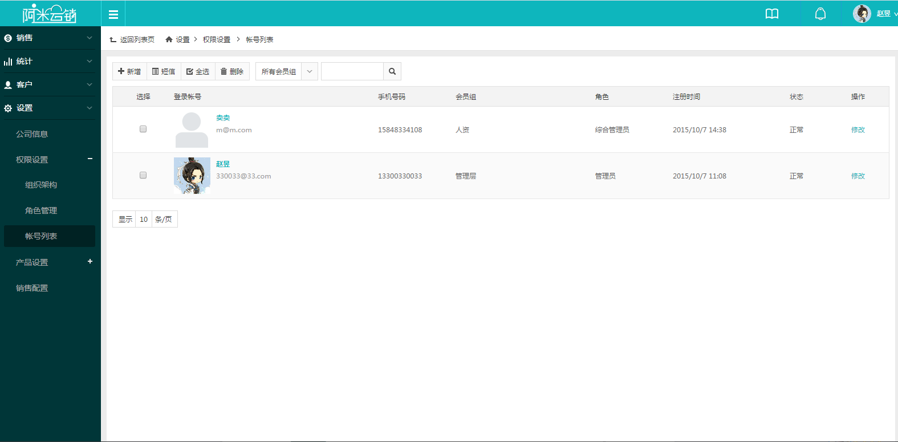
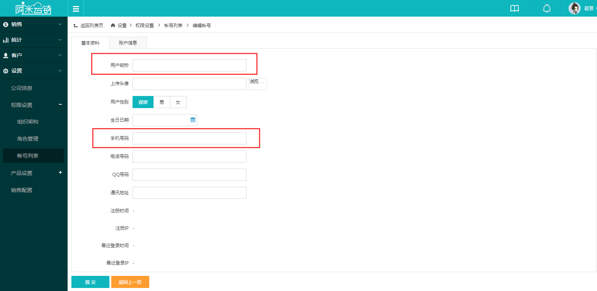
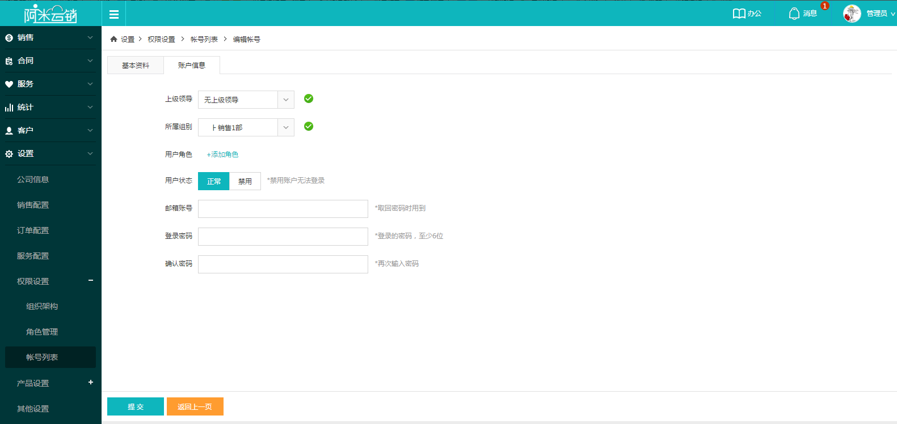

展开权限设置，分为组织架构、角色管理和帐号列表三个模块。
1组织架构：组织架构中配置公司部门及上下层级关系，设置同一组中负责人，之后可将员工设置所属部门。
2角色管理：角色是指带有权限的系统人员的意思，不同的角色分配不同的权限，之后可将员工设置所属角色。进入角色管理页面，可以看到，系统中默认存在13中系统角色，是不能删除更改的，可直接选择使用，如需自定义可直接点击新增来添加。
点击左上方【新增】添加自定义角色，输入角色名称，选择所需权限。
权限列表的最下方，拥有数据权限配置，数据权限是指查看销售线索、合同、办公日报等内容的权限，如某部门领导，需要查看除自己外其他销售员工的权限，则选本部门即可，如综合管理员需查全公司的权限，则对应选择全公司即可。
3账号列表：展示本公司内所有使用系统的人员信息，首次使用只有系统管理员，其他人员需在此处添加帐号后方可使用。
新增账号界面分为基本资料和账户信息两部分，基本资料需填写用户名称、手机号码，手机号作为登陆账号，其他信息可选填，稍后自己登陆可进行补充修改。
账户信息主要为用户设置组织关系、分配系统角色及设置登录密码。上级领导处选择对应领导后，领导可产看其销售线索，工作报告等信息；所属组别设置员工组织关系；用户角色为用户分配之前已经创建好的角色，支持多选，角色不同，拥有的帐户权限不同，全部选择完毕，点击下方提交创建成功。
